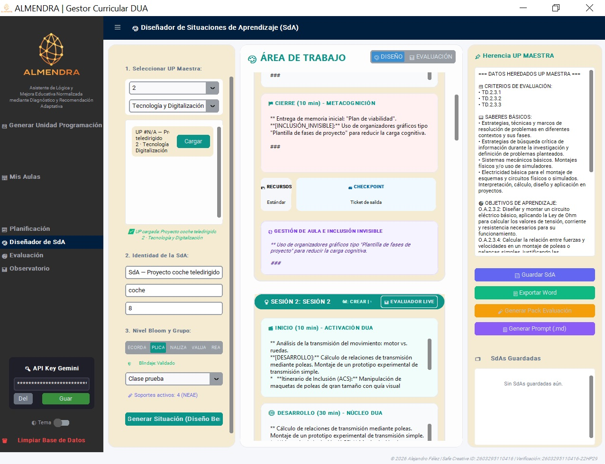

3
En este apartado se explica de manera detallada todas las acciones que se pueden realizar y completar en el apartado de generación de situaciones de aprendizaje.
{"typeGame":"Mapa","instructions":"","showMinimize":false,"showActiveAreas":false,"author":"","url":"../content/resources/imagen60.jpg","authorImage":"","altImage":"","itinerary":{"showClue":false,"clueGame":"","percentageClue":40,"showCodeAccess":false,"codeAccess":"","messageCodeAccess":""},"points":[{"id":"p1097066198925","title":"Carga unidad didáctica","type":2,"url":"","video":"","x":0.19166443889360574,"y":0.2832995961013349,"x1":0,"y1":0,"points":[],"pointsd":[],"footer":"","author":"","alt":"","iVideo":0,"fVideo":0,"eText":"","iconType":85,"question":"","question_audio":"","toolTip":"","link":"","color":"#000000","fontSize":"14","map":{"id":"a1097066198925","pts":[{"id":"p495958936137","title":"","type":0,"url":"","video":"","x":0,"y":0,"x1":0,"y1":0,"points":[],"pointsd":[],"footer":"","author":"","alt":"","iVideo":0,"fVideo":0,"eText":"","iconType":0,"question":"","question_audio":"","toolTip":"","link":"","color":"#000000","fontSize":"14","map":{"id":"a495958936137","url":"","alt":"","author":"","pts":[]},"slides":[{"id":"s495958936137","title":"","url":"","author":"","alt":"","footer":""}],"tests":[],"activeSlide":0,"activeTest":0}],"url":"","alt":"","author":"","active":0},"slides":[{"id":"s1097066198925","title":"","url":"","author":"","alt":"","footer":""}],"tests":[],"activeSlide":0,"activeTest":0,"audio":""},{"id":"p199582839551","title":"Personalización","type":2,"url":"","video":"","x":0.19166443889360574,"y":0.6575849366419524,"x1":0,"y1":0,"points":[],"pointsd":[],"footer":"","author":"","alt":"","iVideo":0,"fVideo":0,"eText":"","iconType":85,"question":"","question_audio":"","toolTip":"","link":"","color":"#000000","fontSize":"14","map":{"id":"a199582839551","pts":[{"id":"p1744820547256","title":"","type":0,"url":"","video":"","x":0,"y":0,"x1":0,"y1":0,"points":[],"pointsd":[],"footer":"","author":"","alt":"","iVideo":0,"fVideo":0,"eText":"","iconType":0,"question":"","question_audio":"","toolTip":"","link":"","color":"#000000","fontSize":"14","map":{"id":"a1744820547256","url":"","alt":"","author":"","pts":[]},"slides":[{"id":"s1744820547256","title":"","url":"","author":"","alt":"","footer":""}],"tests":[],"activeSlide":0,"activeTest":0}],"url":"","alt":"","author":"","active":0},"slides":[{"id":"s199582839551","title":"","url":"","author":"","alt":"","footer":""}],"tests":[],"activeSlide":0,"activeTest":0,"audio":""},{"id":"p1365296768948","title":"Generar situación de aprendizaje","type":2,"url":"","video":"","x":0.19016965494220417,"y":0.9257618668009934,"x1":0,"y1":0,"points":[],"pointsd":[],"footer":"","author":"","alt":"","iVideo":0,"fVideo":0,"eText":"","iconType":85,"question":"","question_audio":"","toolTip":"","link":"","color":"#000000","fontSize":"14","map":{"id":"a1365296768948","pts":[{"id":"p485351486132","title":"","type":0,"url":"","video":"","x":0,"y":0,"x1":0,"y1":0,"points":[],"pointsd":[],"footer":"","author":"","alt":"","iVideo":0,"fVideo":0,"eText":"","iconType":0,"question":"","question_audio":"","toolTip":"","link":"","color":"#000000","fontSize":"14","map":{"id":"a485351486132","url":"","alt":"","author":"","pts":[]},"slides":[{"id":"s485351486132","title":"","url":"","author":"","alt":"","footer":""}],"tests":[],"activeSlide":0,"activeTest":0}],"url":"","alt":"","author":"","active":0},"slides":[{"id":"s1365296768948","title":"","url":"","author":"","alt":"","footer":""}],"tests":[],"activeSlide":0,"activeTest":0,"audio":""},{"id":"p265293461446","title":"Selección clase","type":2,"url":"","video":"","x":0.1856853030879994,"y":0.8131405075776924,"x1":0,"y1":0,"points":[],"pointsd":[],"footer":"","author":"","alt":"","iVideo":0,"fVideo":0,"eText":"","iconType":85,"question":"","question_audio":"","toolTip":"","link":"","color":"#000000","fontSize":"14","map":{"id":"a265293461446","pts":[{"id":"p1630873832159","title":"","type":0,"url":"","video":"","x":0,"y":0,"x1":0,"y1":0,"points":[],"pointsd":[],"footer":"","author":"","alt":"","iVideo":0,"fVideo":0,"eText":"","iconType":0,"question":"","question_audio":"","toolTip":"","link":"","color":"#000000","fontSize":"14","map":{"id":"a1630873832159","url":"","alt":"","author":"","pts":[]},"slides":[{"id":"s1630873832159","title":"","url":"","author":"","alt":"","footer":""}],"tests":[],"activeSlide":0,"activeTest":0}],"url":"","alt":"","author":"","active":0},"slides":[{"id":"s265293461446","title":"","url":"","author":"","alt":"","footer":""}],"tests":[],"activeSlide":0,"activeTest":0,"audio":""},{"id":"p1397456379763","title":"Herencia unidad didáctica","type":2,"url":"","video":"","x":0.9465303343514057,"y":0.12899809902154127,"x1":0,"y1":0,"points":[],"pointsd":[],"footer":"","author":"","alt":"","iVideo":0,"fVideo":0,"eText":"","iconType":85,"question":"","question_audio":"","toolTip":"","link":"","color":"#000000","fontSize":"14","map":{"id":"a1397456379763","pts":[{"id":"p340067693093","title":"","type":0,"url":"","video":"","x":0,"y":0,"x1":0,"y1":0,"points":[],"pointsd":[],"footer":"","author":"","alt":"","iVideo":0,"fVideo":0,"eText":"","iconType":0,"question":"","question_audio":"","toolTip":"","link":"","color":"#000000","fontSize":"14","map":{"id":"a340067693093","url":"","alt":"","author":"","pts":[]},"slides":[{"id":"s340067693093","title":"","url":"","author":"","alt":"","footer":""}],"tests":[],"activeSlide":0,"activeTest":0}],"url":"","alt":"","author":"","active":0},"slides":[{"id":"s1397456379763","title":"","url":"","author":"","alt":"","footer":""}],"tests":[],"activeSlide":0,"activeTest":0,"audio":""},{"id":"p346741328325","title":"Guardado SdA","type":2,"url":"","video":"","x":0.9495199022542089,"y":0.7857402764477777,"x1":0,"y1":0,"points":[],"pointsd":[],"footer":"","author":"","alt":"","iVideo":0,"fVideo":0,"eText":"","iconType":85,"question":"","question_audio":"","toolTip":"","link":"","color":"#000000","fontSize":"14","map":{"id":"a346741328325","pts":[{"id":"p998797589313","title":"","type":0,"url":"","video":"","x":0,"y":0,"x1":0,"y1":0,"points":[],"pointsd":[],"footer":"","author":"","alt":"","iVideo":0,"fVideo":0,"eText":"","iconType":0,"question":"","question_audio":"","toolTip":"","link":"","color":"#000000","fontSize":"14","map":{"id":"a998797589313","url":"","alt":"","author":"","pts":[]},"slides":[{"id":"s998797589313","title":"","url":"","author":"","alt":"","footer":""}],"tests":[],"activeSlide":0,"activeTest":0}],"url":"","alt":"","author":"","active":0},"slides":[{"id":"s346741328325","title":"","url":"","author":"","alt":"","footer":""}],"tests":[],"activeSlide":0,"activeTest":0,"audio":""},{"id":"p967109053688","title":"Botones de acción","type":2,"url":"","video":"","x":0.9943634207962564,"y":0.6381674609137971,"x1":0,"y1":0,"points":[],"pointsd":[],"footer":"","author":"","alt":"","iVideo":0,"fVideo":0,"eText":"","iconType":85,"question":"","question_audio":"","toolTip":"","link":"","color":"#000000","fontSize":"14","map":{"id":"a967109053688","pts":[{"id":"p1389482445913","title":"","type":0,"url":"","video":"","x":0,"y":0,"x1":0,"y1":0,"points":[],"pointsd":[],"footer":"","author":"","alt":"","iVideo":0,"fVideo":0,"eText":"","iconType":0,"question":"","question_audio":"","toolTip":"","link":"","color":"#000000","fontSize":"14","map":{"id":"a1389482445913","url":"","alt":"","author":"","pts":[]},"slides":[{"id":"s1389482445913","title":"","url":"","author":"","alt":"","footer":""}],"tests":[],"activeSlide":0,"activeTest":0}],"url":"","alt":"","author":"","active":0},"slides":[{"id":"s967109053688","title":"","url":"","author":"","alt":"","footer":""}],"tests":[],"activeSlide":0,"activeTest":0,"audio":""}],"isScorm":0,"textButtonScorm":"Guardar la puntuación","repeatActivity":true,"weighted":100,"textAfter":"","evaluationG":0,"selectsGame":[{"typeSelect":0,"numberOptions":4,"quextion":"","options":["","","",""],"solution":"","solutionWord":"","percentageShow":35,"msgError":"","msgHit":"","tests":[],"respuesta":"","numbertests":0}],"isNavigable":true,"showSolution":true,"timeShowSolution":3,"version":3,"percentajeIdentify":100,"percentajeShowQ":100,"percentajeQuestions":100,"autoShow":false,"autoAudio":true,"optionsNumber":0,"evaluation":false,"evaluationID":"d35416bc-50c0-444e-a37c-18a3f3232477","id":"idevice-1784569954188-bbqdztfs1","order":"","hideScoreBar":false,"hideAreas":false,"msgs":{"msgSubmit":"Enviar","msgIndicateWord":"Proporciona una palabra o expresión","msgClue":"¡Genial! La pista es:","msgErrors":"Errores","msgHits":"Aciertos","msgScore":"Puntuación","msgWeight":"Peso","msgMinimize":"Minimizar","msgMaximize":"Maximizar","msgFullScreen":"Pantalla Completa","msgNoImage":"Pregunta sin imágenes","msgSuccesses":"¡Correcto! | ¡Excelente! | ¡Genial! | ¡Muy bien! | ¡Perfecto!","msgFailures":"¡No era eso! | ¡Incorrecto! | ¡No es correcto! | ¡Lo sentimos! | ¡Error!","msgTryAgain":"Necesitas al menos %s% de respuestas correctas para obtener la información. Inténtalo de nuevo.","msgEndGameScore":"Comience la partida antes de guardar la puntuación.","msgScoreScorm":"La puntuación no se puede guardar porque esta página no forma parte de un paquete SCORM.","msgPoint":"Punto","msgAnswer":"Responder","msgOnlySaveScore":"¡Solo puede guardar la puntuación una vez!","msgOnlySave":"Solo puede guardar una vez","msgInformation":"Información","msgYouScore":"Su puntuación","msgOnlySaveAuto":"Su puntuación se guardará después de cada pregunta. Solo puede jugar una vez.","msgSaveAuto":"Su puntuación se guardará automáticamente después de cada pregunta.","msgSeveralScore":"Puede guardar la puntuación tantas veces como quiera","msgYouLastScore":"La última puntuación guardada es","msgActityComply":"Ya ha realizado esta actividad.","msgPlaySeveralTimes":"Puede realizar esta actividad cuantas veces quiera","msgClose":"Cerrar","msgPoints":"puntos","msgPointsA":"Puntos","msgQuestions":"Preguntas","msgAudio":"Audio","msgAccept":"Aceptar","msgYes":"Sí","msgNo":"No","msgShowAreas":"Mostrar áreas activas","msgShowTest":"Mostrar cuestionario","msgGoActivity":"Haz clic aquí para hacer esta actividad","msgSelectAnswers":"Selecciona las opciones correctas y haz clic en el botón ","msgCheksOptions":"Marca todas las opciones en el orden correcto y haz clic en ","msgWriteAnswer":"Escribe la palabra o frase correcta y haz clic en ","msgIdentify":"Identifica","msgSearch":"Buscar","msgClickOn":"Haz clic en","msgReviewContents":"Debes revisar el %s% de los contenidos de la actividad antes de completar el cuestionario.","msgScore10":"¡Todo está perfecto! ¿Quieres repetir esta actividad?","msgScore4":"No has superado la prueba. Revisa sus contenidos e intentarlo de nuevo. ¿Quieres repetir la actividad?","msgScore6":"¡Genial! Has superado la prueba, pero seguro que puedes mejorar. ¿Quieres repetir la actividad?","msgScore8":"¡Casi perfecto! Aún puedes hacerlo mejor. ¿Quieres repetir la actividad?","msgNotCorrect":"¡No es correcto! Has hecho clic en","msgNotCorrect1":"¡No es correcto! Has hecho clic en","msgNotCorrect2":"y la respuesta correcta es","msgNotCorrect3":"¡Prueba otra vez!","msgAllVisited":"¡Genial! Has visitado los puntos requeridos.","msgCompleteTest":"Puedes hacer la prueba.","msgPlayStart":"Pulsa aquí para empezar","msgSubtitles":"Subtítulos","msgSelectSubtitles":"Selecciona un archivo de subtítulos. Formatos admitidos:","msgNumQuestions":"Número de preguntas","msgHome":"Inicio","msgReturn":"Volver","msgCheck":"Comprobar","msgUncompletedActivity":"Actividad no completada","msgSuccessfulActivity":"Actividad superada. Puntuación: %s","msgUnsuccessfulActivity":"Actividad no superada. Puntuación: %s","msgTypeGame":"Mapa"}}

Para poder generar una situación de aprendizaje previamente hay que realizar un guardado de unidad didáctica, para de esta manera fijar los elementos curriculares necesarios para su desarrollo.
En estas cajas se pueden introducir variables de personalización. La única imprescindible es incluir el número de sesiones esperado de la situación de aprendizaje
Este botón traslada orden al System Prompt para que ejecute la generación de situación de aprendizaje
En este desplegable se realiza la selección del grupo clase a la que va destinada para traslada propuesta de situación de aprendizaje ajustada y personalizada a las características del grupo clase en base a las metricas obtenidas de los descriptores operativos más críticos
En este cuadro se muestra la información heredada de la unidad didáctica. Permite su comprobación y trazabilidad
En este apartado nos permitirá cargar las situaciones de aprendizaje guardadas
Estos botones permiten realizar una serie de acciones. Guardar, exportar a formato editable .doc, cargar y generar promp maestro en formato markdown.md
Su navegador no es compatible con esta herramienta.